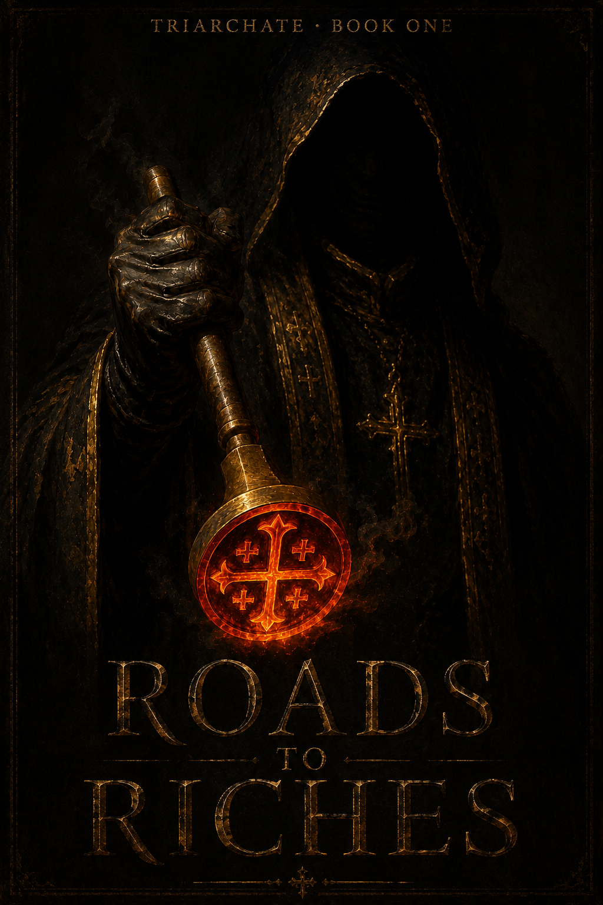

In one mortal realm ruled by a god's Church, every soul is taught that all suffering is its own sin made manifest. Five factions, each certain it alone knows the truth about the silent gods, circle the secret that could shatter the world: a branded outcast in the slums who is the god himself — amnesiac, and afraid.

Now in review as a free audiobook on ElevenReader.
An ensemble thriller in five voices. The boy at the center is never a narrator — we know him only through five sets of eyes that each see a different person. Only the reader ever assembles the truth.
The iron came out of the brazier the color of a sunset no one in the Ashes would ever afford to watch.
Corvin held it the way he held everything now: without thought. Thirty years had worn the prayer down to a groove in him, so that the words ran on while the rest of him stood somewhere off to the side, watching. The Breath fills all the air the Triad breathed. A clean soul lets it pass. A stained soul lets it in. He did not believe the words anymore. He had stopped noticing whether he believed them, which was worse, the way a man stops noticing a tooth has gone dead until the day it crumbles in his mouth.
The penitent was a cooper named Edrin. Forty-some, hands ruined by the trade, a face that had cried itself empty before Corvin ever lifted the brand. His sins, as confessed, were these: his roof had fallen and killed his son. His well had soured. His wife had taken a fever that bent her into the shape of a question mark and left her there. Three misfortunes, and the doctrine permitted only one reading of them. Misfortune was the Breath finding the gaps in a soul. Where the gods touched a man, the man had given them a door.
So Edrin had sinned. The proof was that Edrin suffered. There was no other proof allowed, and so there needed to be no other proof at all. This was the genius of it, Corvin thought — the thought arriving uninvited, the way they did lately, slipping in through some gap of his own. The doctrine could not be wrong. Every wound confirmed it. The whole realm policed itself with its own grief.
"Hold him," Corvin said.
Two acolytes took the cooper's arms. The lower cells of the High Choir smelled of tallow and scorched skin and the cold stone sweat of a building that had been damning people since before Corvin's grandfather drew breath. Somewhere above them, the cathedral was singing. It was always singing. The Triad heard, or did not, and only the Voice could say which, and the Voice was three streets and one impossible gulf of station away from this room.
The iron touched the cooper's collarbone.
Edrin screamed the way they all screamed, and Corvin's hand did not shake.
That was the thing. That was the small horror he carried home each night like a stone in his boot. Not the screaming — he had made his peace with the screaming, or rather he had stopped having peace to make. It was his own hand. Steady as a mason's level. A young confessor's hand shook; it meant something to him still, the searing of a soul. Corvin's hand had not trembled in eleven years. He had measured it once, on purpose, holding the iron a foot from a man's flesh and watching his own knuckles for any flicker of the human thing that ought to live there. Nothing. He had branded the divine mark into that man with the calm of a clerk stamping wax.
If the god was real, Corvin had thought that night, then surely the god should object to being served by a man who felt nothing. And if the god was not real—
He had not finished the sentence then. He did not finish it now. He had become very skilled at not finishing it.
The brand lifted. The mark would scar into the shape the doctrine demanded, and Edrin the cooper would walk out the gate into the Ashes, branded, which was to say cast out, which was to say already counted among the dead the living were permitted to ignore. Corvin set the iron back in the coals.
"It is done," he said. "The Triad sees you."
Edrin lifted his head. The fever and the grief and the fire had burned something loose in him, some hinge that kept ordinary men quiet, and he looked at Corvin not with hate but with a terrible, patient curiosity, as if Corvin were a lock he had decided, too late, to try.
"Tell me one thing, Confessor." His voice was a wreck. "If the god is real—" and here Corvin's stomach dropped, because the man was about to say it, the thing, the sentence Corvin had spent three decades refusing to finish for himself "—why does it only ever speak through the men who profit from it?"
The cell was very quiet. Even the cathedral, for a breath, seemed to hold its note.
Corvin had an answer. He had a hundred answers; he had been issued them, the way a soldier is issued a sword, and like a sword each one was made to end a conversation rather than have one. He opened his mouth to deploy whichever came first.
Nothing came.
He stood in the tallow-light with the heat of the brand still ghosting his palm and discovered, to his own quiet terror, that the man had asked him the only question that mattered and he had no sanctioned reply that he himself believed. The silence stretched. The acolytes shifted. And Corvin understood that he had just failed, in the smallest possible way, in front of witnesses too low to matter — but failed all the same, after thirty years, to defend the thing he had given his life to.
"Take him out," he said.
They took him out.
The junior inquisitor was waiting in the antechamber with a file and the particular eagerness of a young man who has found something his superiors will reward him for noticing. Corvin knew him only as Mell — narrow, ambitious, the kind who would one day hold an iron with an unshaking hand and never wonder why.
"Confessor. The brand-rolls." Mell held out the file like an offering. "There's an irregularity. An Ashes ward, registered branded as an infant — the record's there, the mark's recorded — but I cross-checked against the confessions, the rite-rolls, everything for twenty years." He paused for the weight of it. "No confessor has ever read him as stained. Not once. Every reading comes back the same."
Corvin took the file. It was thin. Most lives in the Ashes were thin on paper, however thick the suffering.
"The same how?"
"Clean," Mell said, and lowered his voice on the word as if it were obscene, which in this building it was. "Untouched. The Breath won't take in him. I checked it three ways. It's likely an error, an old clerk's hand, the ink — but I thought—"
"You thought correctly to bring it." Corvin opened the file. A name. A ward. A string of small notations in the dry shorthand of the rite, each one a confessor's hand recording, across twenty years, the same impossible nothing. The catastrophes of the world bent around this one and never bit. Drunk witnesses. Corrupted lines. Coincidence stacked on coincidence until the stack itself became a thing he did not want to look at directly.
Above them the cathedral was still singing, and out beyond its walls the Ashes were already beginning, though Corvin did not yet know it, to smoke. Tonight the slum would burn, and the Voice would answer the fire with a rite, and Corvin would be made to officiate it — a thousand souls where he was used to one. And somewhere in that doomed warren a young man whose only recorded sin was that misfortune kept refusing him would be sitting with the dying, because that was where he always sat.
Corvin closed the file on the name. He did not believe in omens. He had branded omens out of better men than himself.
He read the name again anyway.
Cael, it said. Nothing more.
Thirty-two chapters, three movements, the five voices cut between Game-of-Thrones style and spiralling inward until every road closes on one boy at once.
Five worlds, one spark. Each lens gets one legible wound; Cael is seen only obliquely. Ends as the Ashes catch fire.
Five roads to one boy. The Culling falls; the miracle detonates each wound into obsession; the strands braid, ally, and betray.
All roads, one heartbeat. (Contains the ending.)
Every Omen is one event seen five ways; only the leading faction's reading comes true. The card never names the truth — exactly like the novel.
The "Saint candidate" the whole realm is hunting is not a Saint. He is the Triad itself — the triune god, all three-in-one — incarnate in a mortal vessel that cannot hold it. So he is amnesiac, believing himself just a branded nobody, carrying a dormant remnant of power he has no idea how to use.
He reads as "untouched by the Breath" because the Breath is his own essence — Subjugation cannot touch its source. That is why the iron never took, why misfortune bends around him, why the madman's noise falls silent near him.
No character ever confirms it. No card ever names it. The one heartbeat at the climax — felt five private, contradictory, deniable ways — is assembled into the truth by the reader alone. Even Cassian, the Voice who supposedly hears the Triad, is afraid and unsure. The whole Church, top to bottom, is frightened people guessing. And the gentlest soul in the slum is the answer to every prayer in the realm — and he doesn't know it's him.
The Triad is a triune god: three beings sharing one mind, said to have made the world in their image. Its true names were lost long ago. The Church names its three faces Soul (the world's animating force), Sin (the one who subjugates the sinner), and Saint (the one who redeems only the most worthy).
The cruelty is the machine: sin weakens the soul; a stained soul lets in the Breath — the god's essence hanging in the air — and that is Subjugation, a living hell of misfortune suffered while alive. This is the only sanctioned explanation for suffering, so every misfortune is read as proof you sinned. The realm polices itself with its own grief. The clergy genuinely believe it — which is exactly why it cannot be broken.
The Church brands the terminally stained and casts them out to rot in The Ashes, the slum. The only escape from damnation is Sainthood — practically impossible, and only one Saint may live at a time. Whether the Triad is real at all — dead, absent, or shackled — nobody can prove. That question is the heart of everything.
The Triarchate — one great realm, the Church is the state. Its capital is Choirhold, a cathedral-city where the hymns never cease and to fall silent from praise is itself a crime. At its heart stands The High Choir, seat of the Voice — Cassian, who alone claims to hear the Triad, and whose own secret is the linchpin of the saga.
Not elemental colors — answers. All five see the same Breath, the same misfortune, the same unseen Wrath, and reach opposite conclusions. That is the game's whole originality, and the novel's spine.
Digital, mid-weight. You don't fight over a life total — you fight over what reality means.
A shared row of Omen cards sits between both players — ambiguous facts of the world, each printing five faction reading-lines plus a Dread line. You spend Testimony to push a shared Verdict toward your reading. When an Omen resolves, only the leading faction's line happens, and that faction banks Conviction — the win currency. Whoever wins the Verdict makes their reading true for the table.
Faith — an automatic, escalating tithe (2, then +1/turn), so there's no mana screw and every game is decisions, not draws. Sin — the receipt you survive: powerful cards stain your own souls; the stained hit harder but bleed toward the public Subjugated Row. Testimony — minted by acting in-doctrine, so your economy is your belief enacted. A shared Breath Clock ticks the world toward the Drowned's apocalypse.
Order wins by Judgment, the Vigil by raising the Saint, the Unbowed by abolition (smash the relics, drag the Breath to zero), the Drowned by universal Subjugation, the Quiet by winning unseen. Each faction is a deck; each plays its creed. And at the center of it all sits the Candidate — the evolving figure every faction is built to capture, protect, exploit, or destroy.
TRIARCHATE · codex compiled 2026-06-14 · world, mechanics & Book 1 "Roads to Riches" · a living document